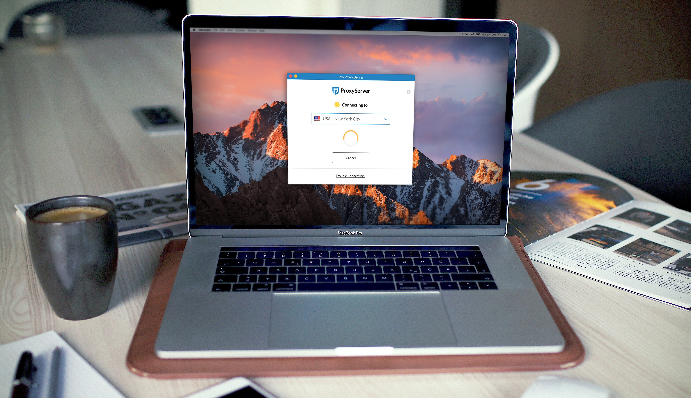
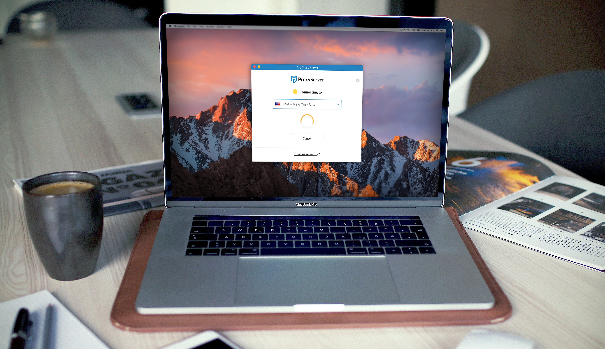

ProxyServer
As UI/UX designer I helped redesign and modernize ProxyServer’s desktop applications and product website.

A New Website That Converts
The ProxyServer website is at the heart of its business- the first point of contact for users looking to learn more about VPNs and also a way to build user confidence. The redesign helped ProxyServer communicate effectively to its target audience of users looking to stay secure online and unlock the internet (region specific content).
We also created targeted landing pages that spoke to the needs of very specific users and drive conversions.
Optimizing the Onboard Flow:
The on-boarding experience for ProxyServer begins on their website, where new users create their account and proceed to download their desktop application.
 

Redesigning for Current Users
Applying usability principles and industry research, I audited the current desktop application against competitors. ProxyServer's target user is someone just getting started in internet security and doesn't need to get bogged down in technical terms and complicated setup steps.
Initial research led my UX decisions to a workflow for new users that removed points of friction and allowed users to connect to ProxyServers VPN instantly after a user had logged in.